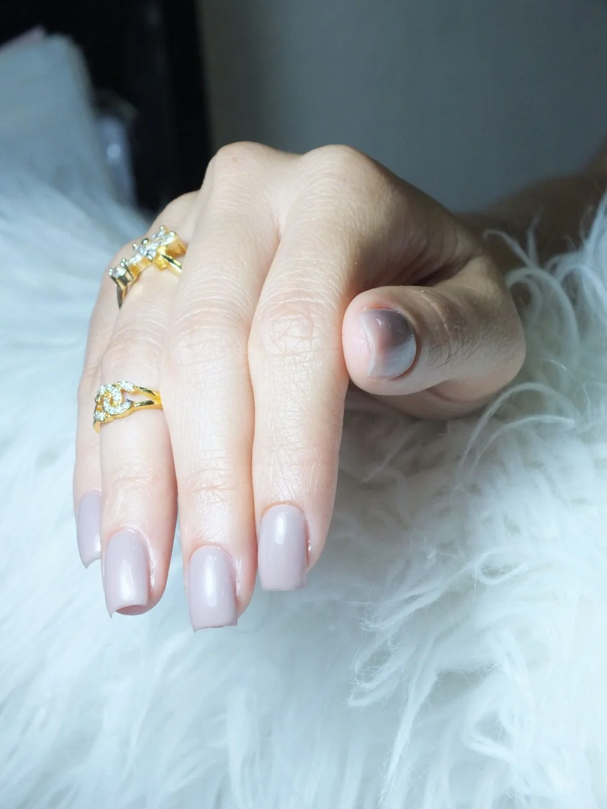
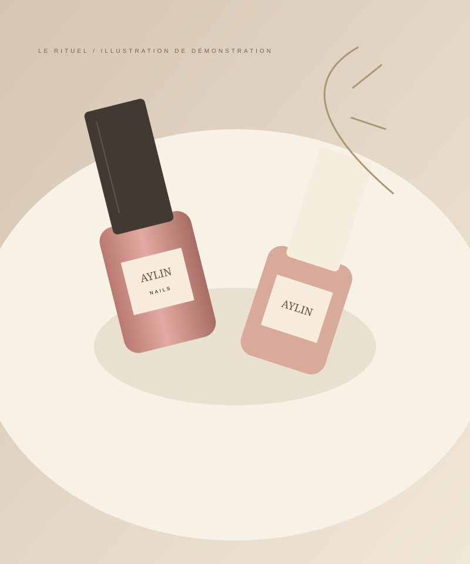

EL ARTE DE CUIDAR TUS UÑAS
AYLIN NAILS
Tus uñas,
tu estilo,
tu momento.
Pequeños detalles que hablan de ti. Un espacio para cuidar tus manos y pies, expresar tu estilo y dedicarte un momento.

FOTO: MOO LENS / PEXELS · DEMOloveAYLIN NAILS

tu momento.
01 / CONOCE A AYLIN
Pasión por
cada detalle.
Detrás de cada diseño hay una forma de entender el cuidado: escuchar, crear y prestar atención a lo pequeño.
La propuesta de Aylin Nails es que tus uñas se sientan tan tuyas como tu estilo. Desde un acabado natural hasta un diseño con personalidad, la inspiración empieza contigo.
Presentación provisional. La historia y la fotografía de Aylin se incorporarán cuando conozcamos su proyecto.
Encuentra tu próximo look02 / CUIDADO A TU MEDIDA
Un detalle.
Muchas posibilidades.
Para las que aman lo sutil.
Para las que se atreven con todo.
Encuentra tu forma de expresarte.
Carta de servicios de demostración · Disponibilidad y precios pendientes de confirmar.
03 / EL MOODBOARD
Un poco de inspiración.
Guarda una idea.
Hazla tuya.
Fotografías de inspiración de Pexels, no trabajos de Aylin. Servicios y precios de ejemplo: orientativos, provisionales y sujetos a confirmación; no son tarifas oficiales.
Fotografías y licencia
Selección de fotografías de Pexels, utilizadas bajo su licencia gratuita. No implican colaboración con sus autores. Los servicios son propuestas de demostración; no certifican la técnica utilizada en cada fotografía. Precios de ejemplo por servicio completo, con decoración cuando se indica.
04 / EL DIARIO DE AYLIN
Lo último, con mimo.
Ideas, tendencias y pequeños
motivos para cuidarte.
Fotografías de inspiración de Pexels, no trabajos realizados por Aylin. Publicaciones de demostración.
UN RATITO SOLO PARA TI
¿Lista para lucir
unas uñas increíbles?
Cuéntanos qué tienes en mente.
Tu próximo diseño empieza con una conversación.
Tú decides si envías el mensaje. No confirma una cita.
05 / HABLEMOS
Nos encantará
conocerte.
AYLIN NAILS · Uñas de manos y pies
Escribir por WhatsAppSe utiliza un número de prueba, no el teléfono comercial definitivo.
- ENCUÉNTRANOS
- Ubicación pendiente de confirmar
- TELÉFONO
- Pendiente de confirmar
- HORARIO
- Pendiente de confirmar
- Perfil pendiente de confirmar